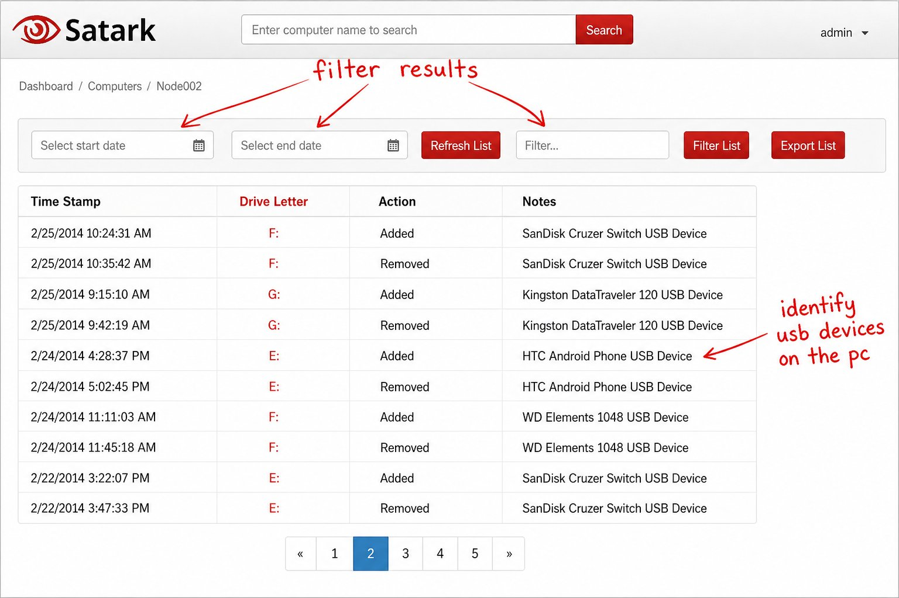

History
From early web security work in 2011 through academic validation, deep-learning research, and a defended PhD thesis—to an open-source security analytics framework at satark.org.
Timeline
-
The Origins of Satark
In December 2011, Kaushal Bhavsar introduced the initial vision for Project Satark alongside team members Shanky Sachdeva and Hiren Chauhan. Originally conceived to provide web security services and on-demand website security assessments, the team quickly laid the foundational groundwork. By mid-December, they had developed the project’s branding, including its first logo, and crafted multiple presentations tailored for both technical and non-technical audiences.
-
The Pivot to Insider Threat Detection
The project’s core mission crystallized in 2013. Following an unsuccessful attempt to acquire the “satark.com” domain from Sanjiv Chhabra in August due to a pricing disagreement, the team secured an alternative domain and officially pivoted their focus. In September 2013, Satark was formally introduced as a dedicated insider threat detection system designed to combat sabotage, fraud, and intellectual property theft. The software was engineered to meticulously track employee activity across programs, files, and USB devices to identify internal risks. By the end of the year, Vatsal Parekh had collaborated to finalize a comprehensive Satark Case Study, cementing the product’s new direction.
-
USB Device Audit Trail for Compliance
Satark positioned USB monitoring as a core compliance capability—helping organizations track removable media usage and retain an audit trail for IT security.
Is fear of data theft lurking on the back of your mind? Satark helps you track usage of USB Devices in your organization and maintain an audit trail for IT Security Compliance.

Product UI: computer search, date filters, and per-host USB device identification (example host Node002). -
Commercial Expansion and Mobile Development
Satark’s commercial footprint expanded significantly throughout 2014. The year began with the distribution of the official Satark Whitepaper in January, followed by its first product brochure being featured in the SoftwareSuggest database in April. The project actively recruited new talent, outlining internship terms for Jaymin Suthar, and coordinated with Bhargav Bhavsar of 9Solve Solutions to establish regional INR pricing strategies.
In 2015, the platform broadened its technological capabilities. The addition of intern Priyank Mal bolstered the team’s data analytics expertise, paving the way for mobile innovation. By June, the team successfully initiated a demo for “Satark @mobile,” a GPS tracking application, delivering the first APK directly to a client.
-
Academic Validation & Platform Growth
In January 2016, an updated presentation (“Satark2015”) re-positioned the system as a Comprehensive Insider Threat Detection and Management Platform. In May 2016, an updated Case Study was released detailing real-world deployment scenarios.
Simultaneously, the underlying core technology achieved academic validation. The paper “An Insider Cyber Threat Prediction Mechanism Based on Behavioral Analysis”, co-authored by Kaushal Bhavsar and Prof. Bhushan H. Trivedi, was presented at the International Conference on ICT for Sustainable Development (ICT4SD 2015) and published in the Springer AISC series in 2016. The paper detailed Satark’s novel methodology: evaluating behavioral precursors (unmet expectations, disgruntlement) alongside technical precursors (masquerading, system exploitation) to assign users a dynamic “Threat-Rank” on a scale of 1 to 10.
-
Advanced Research & Deep Learning Integration
As the platform evolved, the underlying algorithms progressed from traditional baseline analytics to advanced machine learning models. On July 31, 2018, Kaushal presented research on “Predicting Insider Threats by Behavioral Analysis Using Deep Learning” at the SAM’18 conference, establishing an AI-driven theoretical framework for the Satark ecosystem.
-
PhD Synopsis, Thesis Submission & Defense
August 10, 2020: The formal PhD synopsis “Prediction of Insider Cyber Threats using Behavioral Analysis” was submitted to GLS University.
July 26, 2021: The complete PhD thesis was submitted for formal defense.
August 5, 2021: Research titled “Detection of insider threat based on forensic analysis of windows” was presented at the ICT4SD 2021 conference, refining endpoint forensic techniques.
October 10, 2021: Following evaluation and feedback from the review committee, the finalized thesis was formally resubmitted.
-
Conferment of Doctorate
In March 2022, the academic journey culminated in the official conferment of the PhD degree, formally establishing Dr. Kaushal Bhavsar. This marked the transition of Project Satark from a 2011 web security concept into a fully defended, academically validated, and commercially tested framework for insider cyber threat prediction.
-
Trademark Application (India, Class 42)
Word mark SATARK was filed with the Indian Trade Marks Registry (TM Application No. 7223965, Class 42 — cybersecurity research and consultancy services). Proprietor: Kaushal Rameshbhai Bhavsar. Status as of the e-Register extract dated 09/09/2025: Formalities Check Pass. See the trademark page for the full extract.
-
Public framework rebuild
The open-source repository at github.com/kaushalbhavsar/satark is rebuilding SATARK as a plugin-first analytics framework. This website (satark.org) is the canonical project home.